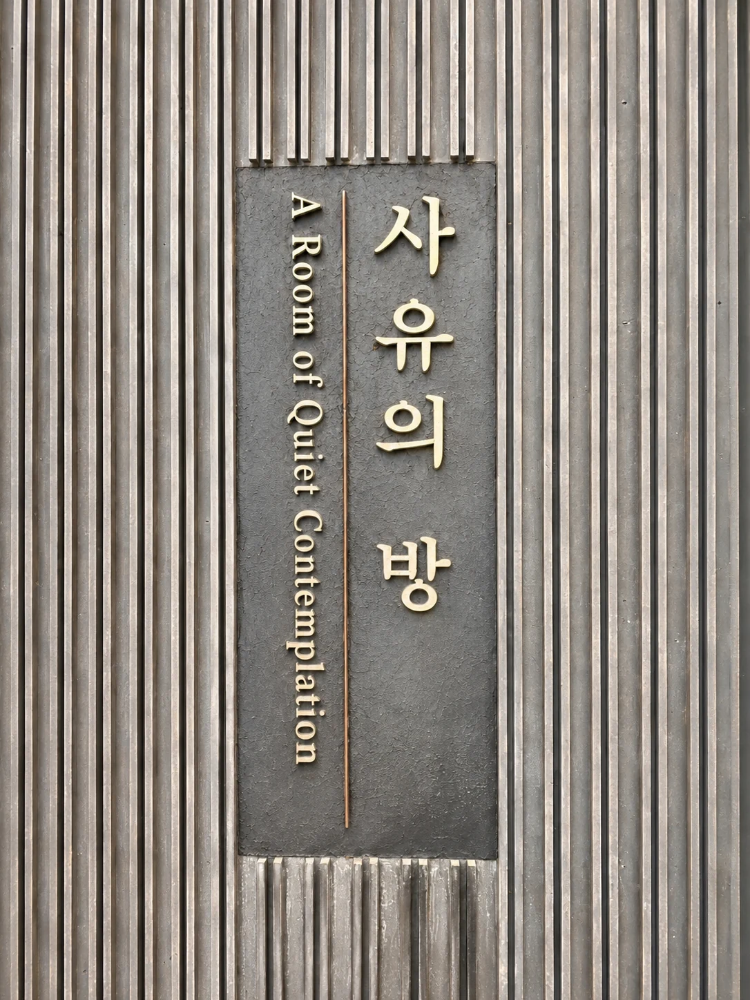

ver 0.10
사유의 방 — A Room of Quiet Contemplation

어두운 방, 별빛 아래
두 반가사유상이 앉아 있습니다.
소리를 켜고 천천히 들어오세요.
다시 불러오기
고요히 들어가기
지금
0
명이 이곳에 머물고 있습니다.
절하기
삼배
명상
소리
명상
3분
10분
20분
들숨 4초 · 날숨 6초에 맞춰 별빛이 숨 쉽니다
돌아가기
들이쉬고
명상 마치기
반가사유상 3D 데이터 © 국립중앙박물관 · 공공누리 제1유형 · GLB 변환·경량화